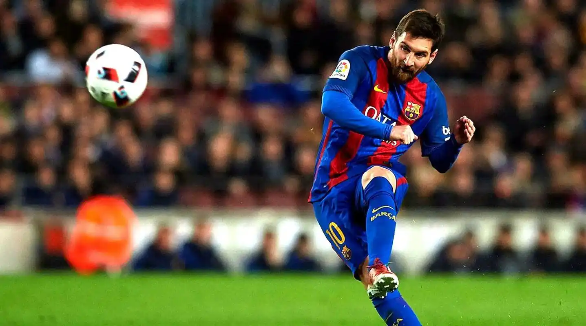
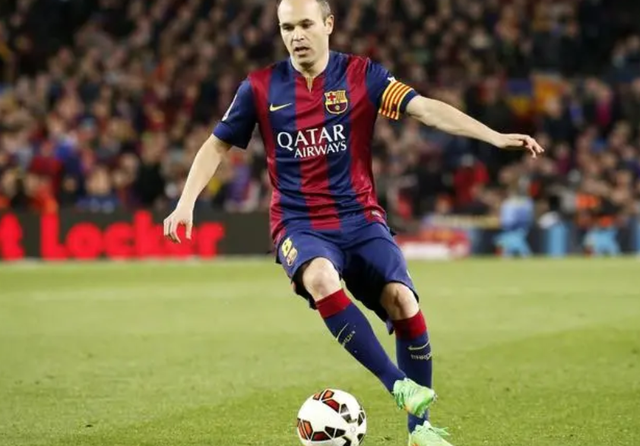
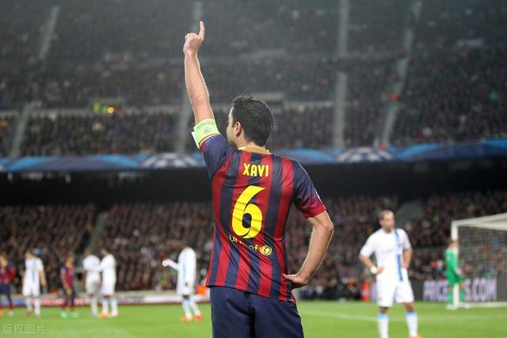
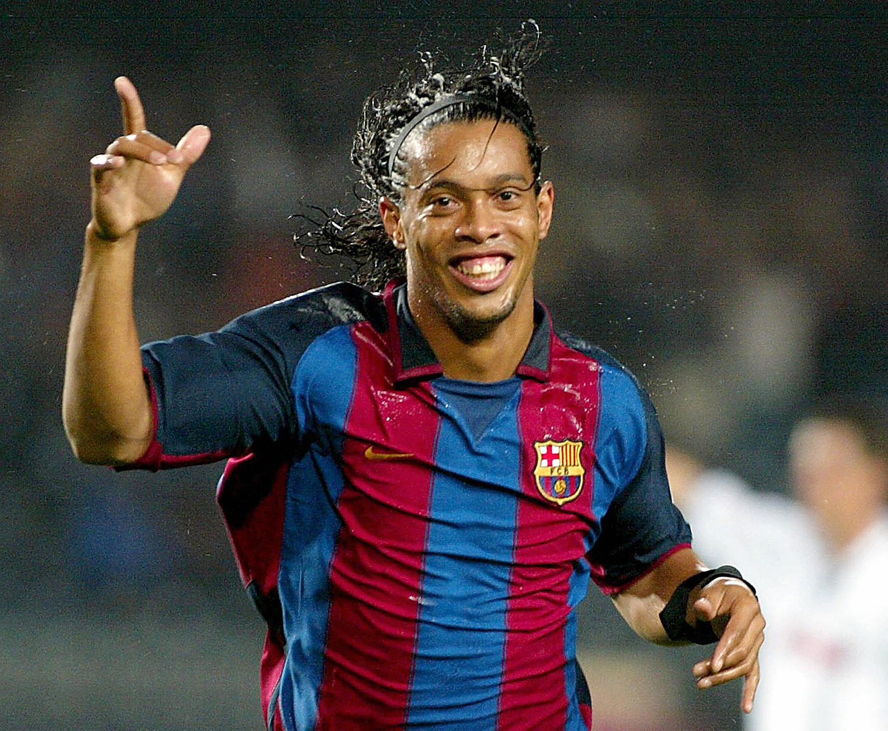

莱奥·梅西
莱奥·梅西（Lionel Messi），阿根廷足球运动员，被广泛认为是足球历史上最伟大的球员之一。他在巴塞罗那效力多年，展现出了惊人的足球天赋和卓越的进球能力。梅西技术全面，盘带、射门、传球等各项技能都堪称顶级，多次凭借一己之力为球队带来胜利，帮助巴塞罗那赢得了众多国内和欧洲赛事的冠军荣誉，在球队历史上留下了浓墨重彩的一笔。
安德雷斯·伊涅斯塔
安德雷斯·伊涅斯塔（Andrés Iniesta），西班牙中场大师。他以其精湛的传球技术、出色的控球能力和卓越的大局观而闻名。在巴塞罗那的比赛中，伊涅斯塔总能在中场巧妙地掌控比赛节奏，通过精准的传球撕开对手防线，为队友创造绝佳的进攻机会，是巴塞罗那中场的核心球员之一，在球队夺得众多冠军的征程中发挥了至关重要的作用。
哈维·埃尔南德兹
哈维·埃尔南德兹（Xavi Hernández），同样是来自西班牙的中场巨星。哈维拥有无与伦比的传球精准度，能够在密集防守中准确地找到队友，他的传球常常能直接撕开对手的防线，为球队的进攻打开局面。在巴塞罗那的战术体系中，哈维起到了关键的中场组织者作用，凭借其出色的表现，助力球队多次称霸西甲以及在欧洲赛场上取得佳绩。
罗纳尔迪尼奥
罗纳尔迪尼奥（Ronaldinho），巴西足球巨星，以其极具观赏性的球风而闻名于世。在巴塞罗那效力期间，罗纳尔迪尼奥展现出了非凡的足球技艺，他的盘带灵动自如，过人技巧令人眼花缭乱，常常能在球场上创造出意想不到的进攻机会。他不仅为球队带来了诸多胜利，还凭借其独特的魅力让巴塞罗那在全球范围内吸引了无数球迷，是巴塞罗那历史上一位极具影响力的球员。